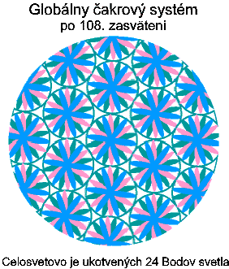

Kozmická hierarchia cez Karen Danrich, Milu Sinoski
5.2.1998
My, Kozmická hierarchia sa chceme zamera» na proces nadobudnutia stavu bytia v piatej dimenzii. Mnohí
zasvätenci na Duchovnej ceste v nadchádzajúcom roku 1998 nastúpia cestu prijatia stavu zvedomenia piatej
dimenzie a mnohí tak urobia v rokoch nasledujúcich. Práve v stave bytia piatej dimenzie je plne integrovaná polarita
a dualita a úplne prijatá nevedomá "temná stránka". To spôsobuje koniec µudských genetických modelov smrti,
de¹trukcie, súperenia, ovládania a zneu¾ívania. Dosiahnutie zvedomenia piatej dimenzie zasvätencovi umo¾òuje
naplno stelesni» bezpodmieneènú lásku a bezpodmieneèné uznanie v¹etkých ostatných foriem ¾ivota na tvári Zeme.
Na to aby to bolo mo¾né, z buneènej ¹truktúry celého stelesnenia sú vymazané v¹etky emocionálne záznamy o
bolesti, zneu¾ití, hanbe, hneve a strachu. Po dosiahnutí stavu zvedomenia piatej dimenzie, tento u zasvätenca
spôsobuje nepretr¾itú bla¾enos», lásku a bo¾ský zväzok. Je to práve zvedomenie piatej dimenzie, ktoré u¾ eóny
èasu hµadajú v¹etci na duchovnej ceste.
 V pyramídach starobylého Egypta nadobúdali zasvätenci
zvedomenie piatej dimenzie v rozpätí mnohých rokov. Tieto
zasvätenia postupne umo¾nili stelesneniu (telesnej schránke)
ka¾dého zasvätenca sta» sa "Kry¹talickým". Pri kry¹talickej
stavbe buniek sa ka¾dá bunka javí ako malièký kry¹tálik a má aj
veµa podobných vlastností. Podobne ako kry¹tály aj kry¹talická
stavba buniek mô¾e uchováva» veµmi vysoké vibrácie, ktoré je
mo¾né vyu¾i» na lieèenie, channeling, alebo na realizáciu
magických schopností akými sú teleportácia, zjavenia, alebo
interdimenzionálne cestovanie. Práve prostredníctvom premeny na
kry¹talickú buneènú ¹truktúru sa mô¾u zmaza» v¹etky
emocionálne záznamy zaznamenané v zasvätencovom stelesnení
(tele), èo vedie k trvalému stavu bla¾enosti. V na¹om èlánku
Nové zasvätenia zo starobylého Egypta sa ná¹ kanál podrobne
venoval zaèiatkom zasväcovacieho procesu z nadobúdania
kry¹talickej formy. V tomto èlánku ná¹ kanál rozprával o prvých
108 zasväteniach a 108 re»azcoch DNA, ktoré premenia dve
tretiny stelesnenia zasvätenca na kry¹talickú formu a premenia
aurické pole na ¹truktúru "Kvetu ¾ivota". Nechceme opakova» to
èo je napísané inde, ale odporúèame na¹im èitateµom vyhµada» tento materiál, ak tak u¾ neurobili.
Na prijatie zvedomenia piatej dimenzie je nutné stelesni» celkovo 1 024 re»azcov DNA, ktoré premenia zvy¹ok
stelesnenia na kry¹talickú formu a zároveò vybudujú dopravný prostriedok v piatej dimenzii, ktorý existuje paralelne
s telom v ¹tvrtej dimenzii. Tento dopravný prostriedok piatej dimenzie dovoµuje súèasnému telu za¾i» stav
zvedomenia piatej dimenzie, ktorý prestupuje v¹etky obmedzenia, emocionálne stelesòuje stav bezpodmieneèného
uznania, spôsobuje úplné vzdanie sa slobodnej vôle a vedie k stavu vnútorného pokoja a mieru, aký na Zemi nebol
pre¾ívaný u¾ 12 000 rokov.
Na¹ím ¾elaním je obsiahnu» proces stelesnenia v¹etkých 1 024 re»azcov DNA pre tých z vás, ktorí sa pú¹»ate
do tohoto ïal¹ieho kroku vo va¹om osobnom vývoji. Aby sme èo najlep¹ie vysvetlili to èo musí by» spracované a
integrované poèas tejto vlny zasvätení, odboèíme trochu do histórie pádu tohoto stvorenia (a pádu v¹etkých
stvorení) a k bolestnej karme nachádzajúcej sa v buneèných pamätiach humanoidnej formy. Kvôli stelesneniu 1 024
re»azcov DNA musí by» integrovaná celá nevedomá rovina reality a musí by» uvoµnená v¹etka karma v
nevedomom. Keï ná¹ kanál integroval svoje nevedomie, objavili sa na vyrie¹enie mnohé karmické dohody s inými
rasami bytostí. Kvôli iným, ktorí budú integrova» svoje nevedomie v nadchádzajúcich rokoch, chceme podrobnej¹ie
rozobra» tieto dohody.
Budeme radi ak na¹i èitatelia s nami pôjdu do dimenzie 4000 kde sa nachádza vajce, ktoré mô¾eme prirovna»
ku "Zdroju v¹etkých zdrojov", z ktorého pochádza v¹etko. Po eóny èasu sa táto dimenzia skladala z dvoch rovín
reality: jednej roviny stelesnenej mu¾ským a ¾enským vedomím a z druhej roviny (ktorá je presným odrazom prvej
roviny) so ¾enským a mu¾ským vedomím. V¹etky skúsenosti v tele pochádzajúce z vajíèka v dimenzii 4000
poznali v èasovom období mnohých triliónov pozemských rokov len mierovú formu vývoja.
"Boh" (alebo vedomie mimo vajíèka) si prialo zakúsi» nieèo iné. A tak boli "zmie¹ané" dve roviny reality,
vytvoriac rovinu, ktorá bola ovládaná dvoma mu¾skými vedomiami a zrkadlovú rovinu ovládanú dvoma ¾enskými
vedomiami. Tento posun polarít spôsobil skrútenie toku energie vyvierajúcej z vajíèka, alebo zdroja v¹etkých
zdrojov ná¹ho stvorenia, èo nakoniec ovplyvnilo v¹etko v stvorení s jedným z dvoch energetických modelov.
Skrútená energia vyvierajúca z dvoch mu¾ských vedomí prúdila v ¹pirále proti smeru hodinových ruèièiek a viedla
ku skúsenosti "slobodnej vôle"; ktorá viedla k nedokonalosti a èasom viedla k de¹trukcii v niektorých èastiach
stvorenia. Energia prúdiaca z vajíèka ovládaného dvoma ¾enskými vedomiami zapríèinila prúdenie energie v ¹pirále
v smere hodinových ruèièiek, èo viedlo dokonalosti a èasom (a v niektorých èastiach stvorenia) k nude a nedostatku
vlastného tvorivého vyjadrenia.
Pred pribli¾ne ¹iestimi miliónmi rokov sa do ná¹ho stvorenia po interdimenzionálnej ceste dostal nový prúd
energie a ovplyvnil Stvoriteµa spravujúceho dimenzie 1 a¾ 144. Táto energia spôsobila, ¾e sa ¾enská èas»
Stvoriteµa oddelila a presunula sa do susedného Stvorenia. Nato sa oddelila mu¾ská èas» zo susedného Stvorenia
a presunula sa do ná¹ho stvorenia. Na¹e Stvorenie skonèilo s dvoma mu¾skými Stvoriteµmi, èo viedlo èasom k
slobodnej vôli, nedokonalosti a nakoniec k de¹trukcii.
De¹trukcia, ktorá je v na¹om stvorení be¾ná, je výsledkom toho, ¾e títo dvaja na¹i Stvoritelia medzi sebou
súperia, miesto toho aby spolupracovali. Jeden Stvoriteµ sa utiahol do úzadia, vytvoriac "tajnú vládu", ktorá sa
sna¾ila podkopa» a ovládnu» celé toto stvorenie. O druhom sa zdalo, ¾e vládne (podobne ako vlády na¹ej Zeme),
ale v skutoènosti ním manipulovala tajná vláda druhého Stvoriteµa. ®elaním Kozmickej hierarchie je, aby na¹i
èitatelia pochopili, ¾e problémy, ktoré sa v súèasnosti vyskytujú na Zemi sú problémami, ktoré sa v rôznej miere
vyskytujú v celom tomto Stvorení a mimo neho.
Pred ¹tyrmi miliónmi rokov sa nevyskytovalo v tomto stvorení niè èo by malo vibráciu ni¾¹iu ako je vibrácia
piatej dimenzie. Podµa genetických záznamov µudstva prebiehala evolúcia a¾ do tohoto bodu pokojne. V¹etky
udalosti celého druhu sú zaznamenané holograficky v genetike ich stelesnení. ¥udstvo je dr¾iteµom holografických
záznamov v¹etkých udalostí v celom stvorení a pre v¹etky humanoidné formy ¾ivota. Podµa na¹ich genetických
záznamov do tohoto stvorenia pri¹la skupina odpadlíckych bytostí z iného stvorenia, ktorých Vesmír bol znièený a
ktoré stratili schopnos» milova» a následkom toho sa stali bojovnými a násilníckymi. Tieto bytosti dokázali vojs» do
ná¹ho stvorenia vïaka interdimenzionálnej trhline medzi stvoreniami, príèinu ktorej bude treba odhali».
Tieto bytosti napadli jednu mierumilovnú a láskyplnú planétu s humanoidnými bytos»ami a po prvýkrát vniesli do
genetických záznamov µudstva násilie, muèenie a znásilnenie. Navy¹e, okrem týchto bolestných skúseností,
nedokázala táto rasa vzostúpi» do ïal¹ej dimenzie keï pri¹iel jej èas. Po vstupe planéty do fotónového pásu, namiesto
vzostupu do ïal¹ej dimenzie, celá planéta a v¹etky bytosti na nej inkarnované spontánne zhoreli a prestali existova».
Toto spontánne zhorenie spôsobilo zní¾enie vibrácie Veµkého centrálneho slnka, strhnúc v¹etko z piatej dimenzie
do tretej dimenzie, v¹etko z dvanástej dimenzie do piatej dimenzie, z 25. dimenzie do dvanástej dimenzie a oddelilo
Mahatmu od Boha. Takáto je príèina prvotného "pádu" ná¹ho stvorenia.
Ná¹ kanál zistil, ¾e v¹etok genetický materiál, ktorý súvisí s pocitom bolesti, hnevu a strachu má svoje korene v
karmickej epizóde humanoidnej formy, ktorá bola napadnutá iným násilníckym druhom pred zhruba ¹tyrmi miliónmi
rokov. Po vyèistení tejto karmy sa tak udeje aj s boles»ou, hnevom a strachom v buneènej ¹truktúre zasvätenca.
Mnohí sa mô¾u divi» tomu preèo je teraz taká veµká pozornos» venovaná Zemi a jej nastávajúcemu vzostupu.
Dôvod je prostý, ale mimoriadne vá¾ny. Ak by Zem nevzostúpila (a spontánne by zhorela), mohla by stiahnu» celé
stvorenie a Veµké centrálne slnko do dimenzií tak nízkych, ¾e by sa celé toto Stvorenie zrútilo do seba. Vizionári
spomedzi bytostí inkarnovaných v µudských aj nie µudských telách z iných Galxií, predvídali hrozbu tejto katastrofy
a zavolali na pomoc. Na toto volanie o pomoc odpovedal rád bytostí z dimenzie 500, známy ako Rád Rize. Rád
Rize je rádom Okultných majstrov, ktorí sa zameriavajú na pomoc èastiam stvorenia, ktoré sa nachádzajú v núdzi.
Symbolom Rádu je drak. Na Zemi sú teraz inkarnovaní mnohí z tohoto rádu a ich cieµom je vyvola» zmeny nutné
pre vzostup Zeme a pomáha» pri oprave celého tohoto stvorenia.
Agresívne a de¹truktívne bytosti, ktoré kedysi dávno napadli na¹e stvorenie sú v tretej dimenzii geneticky
príbuzné urèitým rasám inkarnovaným v na¹om Vesmíre a ktoré sú známe ako "©edí" a "Ilumináti". V dvanástej
dimenzii je to rasa známa ako "Androméïania". "©edí", "Ilumináti" a "Androméïania" sa vyznaèujú podobným
genetickým problémom, ktorý je taktie¾ nutné vyrie¹i». V¹etky tieto rasy stratili schopnos» milova». Dôsledkom
straty lásky sa evolúcia v na¹om Stvorení dosahovala na základe nadobúdania moci skrze nadvládu a násilie a nie
nadobúdaním moci skrze lásku a súcit. Rád Rize zodpovedá za ukotvenie nového vzoru pre v¹etky bytosti tretej,
piatej a dvanástej dimenzie, ktoré po¾iadajú o genetickú prestavbu, aby ka¾dá rasa prijala lásku a súcit pred
skokom v svojom vývoji.
©edí sú dobre zdokumentovaní mnohými autormi. Chceme sa struène zmieni» o genetickej karme medzi
"©edými" a µuïmi, aby sa zasvätenci pri svojom vzostupe mohli sústredi» na tieto otázky. Biela rasa je výsledkom
párenia sa ©edých s Aztéckymi a Mayskými ¾enami pred 7 500 rokmi. ©edí (ktorí majú schopnos» putova»
èasom) videli svoju budúcnos» ohrozenú pri nadchádzajúcom vzostupe Zeme a uvedomili si, ¾e najlep¹í spôsob ako
si udr¾a» µudstvo pod nadvládou je zmie¹a» svoju genetiku s na¹ou. Takáto zmes vytvára karmu, alebo dohody,
ktoré sa stali neoddeliteµnou súèas»ou na¹ej genetickej stavby. Následkom zmie¹ania genetiky ©edých s rasami
Aztékov a Mayov bola èiastoèná strata schopnosti cíti». Ako dôsledok toho bolo, ¾e biela rasa je násilnícka, sna¾í
sa ovláda» iných a manipulova» s nimi a trúfla si bojova» s inými rasami a podrobova» si ich. So stratou citov sa
stráca aj súcit, èo v koneènom dôsledku vedie k bolesti a násiliu, ktoré sú a¾ doteraz v civilizácii be¾né.
Schopnos» cíti» nestratila celá biela rasa. Ná¹ kanál zistil, ¾e následkom genetického zmie¹ania so ©edými bolo
emocionálne telo mu¾ov rozbité na mno¾stvo èastí. Toto rozbitie znemo¾òuje bielym mu¾om cíti» tak hlboko ako
¾enám (a¾ pokým nie je vylieèené). Toto rozbitie sa napraví keï zasvätenec prestúpi 24. zasvätenie a emocionálne
telo sa zjednotí so svetelným telom. (Viï Nové zasvätenia zo starobylého Egypta.)
Genetická karma medzi Bielou rasou a ©edými je základom súèasného roz¹írenia spomienok na únos na celom
svete. Za posledných pä»desiat rokov uniesli ©edí (èasto neustále) vy¹e devä»desiatpä» percent obyvateµstva
Spojených ©tátov a ¹tyridsa» percent celosvetovej populácie. Únosy sú výsledkom snahy ©edých nájs» genetické
rie¹enie ich neschopnosti milova» a v koneènom dôsledku, vyvíja» sa.
Bez srdcovej èakry sa druh nemô¾e vyvíja».
Práve prostredníctvom srdcovej èakry sa chi získaná dýchaním prevádza na kalórie, ktoré mô¾e vyu¾i» telo na podporu vy¹¹ích vibrácií a v koneènom dôsledku vzostúpi» do nasledujúcej dimenzie. Bez otvoreného srdca nemô¾e ¾iadna rasa vytvori» dostatok chi na prenos svojho tela do ïal¹ej dimenzie v procese vzostupu. Jedine prostredníctvom otvoreného srdca mô¾e zasvätenec pre¾i» extatický stav bo¾ského zväzku, ktorý je dôsledkom procesu jeho vzostupu. Vývoj má spoèíva» na láske a z toho dôvodu srdce obsahuje mechanizmus nutný pre vzostup.
Pri spätnom pohµade na svoje vlastné únosy ná¹ kanál zistil, ¾e ©edí presunuli jej telo mimo èas, tak¾e si
nespomína na ¾iadnu stratu èasu. Okrem toho boli zmazané mentálne a emocionálne spomienky na túto udalos».
Av¹ak je to zaznamenané v záznamoch du¹e èloveka a èasto sa pri tomto zá¾itku du¹a doslova trie¹ti. Únosy sú
èasto sprevádzané sexuálnymi testami. Ná¹ kanál pred dávnou dobou zistil, ¾e akt sexuálneho zneu¾itia die»a»a by
mohol by» zabudnutým únosom ©edými, ktorý sa odohral pred tromi a¾ ¹iestimi mesiacmi. Zistila, ¾e deti doslova
znovu vytvoria zá¾itok s rovnakými emóciami strachu a sexuálneho zneu¾itia, ktoré si nemohli obnovi» zo
zabudnutého únosu. Väè¹ina spomienok na únosy je vyjasnených a vylieèených na konci 8. duchovného zasvätenia.
(Kvôli ïal¹ím informáciám o 8. zasvätení viï èlánok Nadobudnutie stavu Krista.) Túto informáciu poskytujeme tým z
vás, ktorí sú lieèiteµmi pomáhajúcimi iným zasvätencom dosta» sa z emocionálnych kríz a tým z vás, ktorí takéto
skúsenosti spracovávajú v tejto dobe.
V decembri 1997 ©edí opustili Zem na fyzickej aj éterickej rovine reality. Mali dvojnásobný dôvod na odchod.
Po prvé, ©edí získali informácie nevyhnutné pre zaèatie nápravy svojich genetických problémov. Tieto informácie
pri¹li ako dôsledok procesu vzostupu a genetickej prestavby, ktorou µudské telo na Zemi v súèasnosti prechádza. V
decembri 1997 sa Matka Zem vibraène dostala dostatoène vysoko, tak¾e na Zemi u¾ viac nebolo mo¾né
udr¾iava» vibráciu ©edých a tak odi¹li.
"Ilumináti" sú rasou, ktorá existuje aj inde v na¹om vesmíre tretej dimenzie. Karma Iluminátov s µudským telom
siaha do minulosti vzdialenej 50 000 rokov a vznikla u Sírianskej rasy. Síriania (ktorí sú humanoidnou rasou v piatej
dimenzii) uzavreli dohodu podporova» dlhovekos» Iluminátov v dobe keï sa obe rasy nachádzali v tretej dimenzii.
Ilumináti majú podobný genetický problém ako ©edí a nedoká¾u milova». Preto¾e majú nefunkènú srdcovú èakru,
tak nedoká¾u previes» chi, alebo energiu z dýchania na pou¾iteµnú formu, aby udr¾ali svoje telá pri ¾ivote viac
ne¾ pä»desiat rokov. Rozdeµovanie energie medzi Sírianov a Iluminátov umo¾nilo Iluminátom i Sírianom dosiahnu»
då¾ku ¾ivota 2 000 rokov.
Keï Síriania pred 20 000 rokmi vzostúpili do piatej dimenzie, karma sa preniesla na µudskú rasu na Zemi. Sme
príbuzní Sírianov (keï¾e osídlili na¹u planétu humanoidnou rasou pred asi 40 000 rokmi) a nesieme si sebou tie¾
v¹etku genetickú karmu, ktorá sa týka Sírianov. Posledných 20 000 rokov dodáva µudská rasa chi pre ¥udskú rasu
aj pre Rasu Iluminátov. Po "Páde èloveka" (a genetickej mutácii na dva re»azce DNA), spôsobilo pokraèujúce
odsávanie chi z µudského tela skrátenie då¾ky ¾ivota na menej ako jedno storoèie a taktie¾ starnutie, choroby a
smr».
Ná¹ kanál zistil, ¾e Ilumináti sa prostredníctvom elektronických zariadení psychicky pripájajú na energetické
pole µudí. Spozorovala, ¾e sa zachytávajú na µudské telo prostredníctvom takých zariadení ako je televízia a
poèítaèe. Televízia väè¹inu µudí uvádza do stavu mierneho tranzu. Ilumináti sa práve prostredníctvom takéhoto stavu
doká¾u spoji» s telom a odobra» toµko chi, koµko sa len dá. Ilumináti usilovne pôsobia aj prostredníctvom drog a
alkoholu. A keï nejaký èlovek po¾ije takéto látky, Ilumináti vytlaèia z tela µudskú du¹u a vojdú do neho. Aj v tomto
prípade je cieµom odobratie energie. Preto odporúèame duchovným zasvätencom obmedzi» také veci ako je
televízia a tie¾ u¾ívanie drog a alkoholu. Ak musí zasvätenec trávi» èas pri poèítaèi, potom vstup Iluminátov do
systému s»a¾í sluèka z medeného vodièa okolo elektrickej zásuvky. Poznámka na záver: Energetické pole
spoloèenstva veµrýb je jediným energetickým poµom na Zemi, do ktorého Ilumináti nedokázali vniknú». Veµryby
vu¾ívajú sonar a takéto nízke zvukové vibrácie sú nezluèiteµné s metalickou vibráciou Iluminátov. Znemo¾òujú im
priblí¾i» sa.
Ilumináti nesú zodpovednos» aj za viac ne¾ 1 000 vírov, ktoré vytvorili okolo celej Zeme za úèelom odsávania
¾ivotnej sily z prírody. Ka¾dý vír vytvoril trhlinu v éterickom poli Matky Zeme. Tieto víry boli uzavreté a éterické
telo Matky zeme bolo vylieèené v januári 1998, keï Lady Gaia (vedomie Zeme) a ná¹ Logos Stvoriteµ uvoµnili svoju
karmu s Iluminátmi. Keï ka¾dý zasvätenec celkom prevedie svoje telo na kry¹talickú formu, potom bude ma» telo
príli¹ vysoké vibrácie na to, aby sa s ním Ilumináti spojili. Keï celé µudstvo vzostúpi, Ilumináti budú nútení opusti»
Zem úplne a budú vystavení skúsenosti starnutia a smrti, a¾ kým sa nenapraví ich genetický problém v èakre srdca.
Prajeme si, aby na¹i èitatelia pochopili, ¾e v oèiach Boha nie je ¾iadna rasa bytostí lep¹ia ne¾ iná. V¹etky rasy
v tomto Stvorení v telách tretej, piatej a dvanástej dimenzie, obdr¾ia pomoc, lásku a vedenie potrebné na nápravu
ich genetických problémov, otvorenie èakry srdca a znovunastolenie evolúcie spoèívajúcej viac na nadobudnutí
lásky, ne¾ na moci.
Ilumináti nie sú jedinou rasou, ktorá vyu¾íva Zem a µudstvo ako zdroj chi, alebo energie. Pred pä» a¾ devä»
tisíc rokmi pri¹la na Zem rodina z Plejád známa ako Anunnaki. Anunnaki sú známi aj ako Bohovia Stvoritelia o
ktorých sa pí¹e v Starom zákone a sú príbuzní gréckych a rímskych Bohov. Anunnaki pri¹li po Veµkých záplavách a
po Páde Atlantídy so svojím vlastným programom. Vïaka obrovskému poètu èiernych dier v tretej dimenzii (v¹etky
sú dôsledkom znièenej planéty, alebo hviezdy), ich slneèná sústava zaèala stráca» ¾ivotnú silu. Táto strata ¾ivotnej
sily zaèala skracova» då¾ku ¾ivota tých, ktorí sa inkarnovali v ich slneènej sústave. Anunnaki pri¹li na Zem
vybudova» energetický most, ktorý by im umo¾nil odsáva» ¾ivotnú silu z na¹ej planéty a µudstva. Ná¹ kanál zistil,
Plejáïania sa napojili na hlavné víry Zeme a do jej genetickej ¹truktúry (t.j. do genetickej ¹truktúry Karen Danrich),
do spodnej èasti chrbta a do oblasti èakry koreòa. Pripojenia na hlavné víry Zeme preru¹ila Matka Zem v októbri
1997. Keï ka¾dý zasvätenec uvoµní svoju genetickú karmu s Anunnakmi, prepojenia sa mô¾u preru¹i» na
individuálnom základe.
Anunnaki nesú zodpovednos» aj za zvrhnutie prvej atómovej bomby na Zemi. Podµa planetárnych záznamov
obdobie, v ktorom sa Anunnaki nachádzali na Zemi trvalo 500 rokov. Poèas tohoto obdobia jednotliví èlenovia
rodiny zaèali medzi sebou súperi» a toto súperenie vyvrcholilo v atómovom výbuchu stokrát silnej¹om ne¾ výbuch
nad Hiro¹imou a Nagasaki v roku 1945. Po tomto výbuchu Veµké biele bratstvo prinútilo Anunnaki opusti» Zem.
¥udstvo, ktoré bolo Atlantskou civilizáciou predurèené by» rasou otrokov, malo a¾ do tejto chvíle dvanás»
re»azcov DNA, ¾ilo v harmónii s Matkou Zemou a vo vzájomnej harmónii, då¾ka ¾ivota bola 500 rokov a bývali
zriedka chorí. Po atómovom výbuchu µudstvo geneticky zmutovalo na teraj¹ie dva re»azce DNA, èo následne
uzavrelo kundalíny a sexuálny energetický systém.
Práve kundalíny a sexuálna energia obnovuje telo (umo¾òujúc dlh¹í ¾ivot) a udr¾uje civilizáciu v harmónii.
Mnohí vyznavaèi Tantra jogy vedia, ¾e keï dvaja, alebo viacerí spoja svoju sexuálnu energiu, spôsobí to, ¾e v¹etky
èakry budú rezonova» vo vzájomnej harmónii, èo vedie k zvý¹enej úrovni harmónie vo vz»ahu, alebo v skupine.
Okrem uzavretia sexuálneho energetického systému, druhá èakra (a mnohé vedµaj¹ie èakry tela, ktoré udr¾iavali v
rovnováhe energetické meridiány v µudskom tele) sa zrútila do energetického modelu èiernej diery. Tieto èierne
diery, ktoré sa nachádzajú v celom systéme hlavných a vedµaj¹ích èakier, sú základnou príèinou chorôb. ¥udstvo
zakúsilo choroby po prvýkrát po vojne Anunnaki.
Dve atómové bomby zvrhnuté na Japonsko v roku 1945 mali takisto globálny úèinok na µudskú rasu. Chceme,
aby na¹i èitatelia pochopili, ¾e µudstvo ako celok sa delí o v¹etku boles» zakúsenú v dejinách Zeme a v dejinách
humanoidnej formy. V genetických záznamoch ka¾dého jednotlivca nájdete skúsenosti z Pádu Atlantídy, Pádu
Ríma, Trail of Tears*, Prvej a Druhej Svetovej vojny, Hiro¹imy a Holokaustu.
* Ako "Trail of Tears" sa nazýva násilný presun indiánov kmeòa Cherokee z ich pôvodného územia v teraj¹ej Georgii do
Oklahomy v roku 1838. (Podrobnosti viï na stránke http://www.ngeorgia.com/history/nghisttt.html).
®eláme si, aby ste pochopili, ¾e µudská rasa je jednou rasou,
bez ohµadu na farbu ko¾e. Celé µudstvo sa delí o boles», ktorú na seba uvalilo samotné µudstvo, alebo ktorú na µudský ¾ivot uvalili iné rasy z iných galaxií.
Dve atómové bomby zvrhnuté na Japonsko spôsobili, ¾e v ka¾dej µudskej bytosti na Zemi v rôznej miere
implodovala èakra srdca. Implodovaná èakra srdca (ktorá sa podobá èiernej diere) privádza µudstvo do bolesti.
¥udstvo kompenzovalo boles» tým, ¾e preru¹ilo jej spojenie s telom a nauèilo sa ¾i» od krku vy¹¹ie. Pri prvom
výklade si ná¹ kanál èasto v¹imne, ¾e èlovek vyzerá energeticky ako zmrzlinový kornútok, s celým aurickým poµom
nad krkom. Toto odpojenie µudstvu znemo¾òuje cíti» a vyústilo to do civilizácie, ktorá je stále viac násilnícka,
pornografická, fyzicky chorá. Èakra srdca je základným pilierom imunitného systému. Implodovaná èakra srdca
vedie k takým ochoreniam ako je AIDS, MS, lupus a ostatné poruchy imunity. Implodovaná èakra srdca spôsobuje
aj depresie a samovra¾edné nálady, ktorých intenzita sa v uplynulých pä»desiatych stále zvy¹uje. Ná¹ kanál objavil,
¾e µudia trpiaci depresiami nájdu takmer okam¾itú úµavu po uvoµnení srdcovej èakry a po umo¾není energii
správne prúdi».
Tieto dve bomby a atómové pokusy, nad ktorými na¹e vlády pri¾murujú oèi, okrem implodovaných èakier
srdca spôsobujú implóziu systému hlavných a vedµaj¹ích èakier éterického tela µudstva, rastlinnej, ¾ivoèí¹nej a
minerálnej rí¹e. To spôsobuje zvy¹ovanie chorobnosti u µudí a v prírode. Keï zasvätenec prestúpi 12. duchovné
zasvätenie, oslobodí sa od v¹etkých èiernych dier v hlavných a vedµaj¹ích èakrách, obnoví sa kundalíny a systém
sexuálnej energie a aurické pole je uzemnené okolo celého tela. Keï zasvätenec dokonèí 108. zasvätenie rie¹i sa
genetická karma medzi µudstvom a Plejáïanmi. Dokonèením Zasvätenia 1024 je prestúpená buneèná viera v boj a
nukleárnu silu, èo umo¾ní zasvätencovi by» celkom imúnnym voèi atómovým pokusom, nehodám na atómových
zariadeniach a atómovým elektráròam. O zasväteniach 109 a¾ 1024 sa bude vravie» v ïal¹ej èasti tohoto èlánku.
Okrem Anunnaki a Iluminátov (ktorí sú zodpovední za odoberanie na¹ej ¾ivotnej sily), je za úèelom odoberania
energie napojených na µudstvo ïal¹ích pä» planét. Tieto planéty sa nachádzajú v tretej dimenzii a napojenie na
µudstvo majú na svedomí samotní Logosi Stvoritelia týchto planét. Je to karmicky spôsobené na¹ím planetárnym
logosom, Sanat Kumarom, ktorý na to, aby zachoval na Zemi ¾ivot, ukradol kedysi veµmi dávno týmto piatim
logosom informácie. Rovnako ako je to v prípade súèasnej informaènej vojny na Zemi, informácie v na¹om Vesmíre
zaèali by» obmedzované po tom èo sa ujali moci tajné vlády zalo¾ené druhým Logosom Stvoriteµom tohoto
Stvorenia. Po obmedzení informácií bol obmedzovaný aj ¾ivot.
Aby títo piati Logosi kompenzovali stratu informácií (èo by následne spôsobilo smr» ich planét), vyslali
inkarnova» sa na Zem èasti seba samých za úèelom odoberania energie od µudstva. Do dne¹ného dòa objavil ná¹
kanál stovky jednotlivcov, ktorí sú príbuzní týchto logosov, ktorých aurické polia obsahujú rad kanálov urèených na
napojenie sa na ka¾dého s kým prídu do styku, odobratie jeho energie a jej odoslanie k niektorej z týchto piatich
planét. Na Zemi je inkarnovaných znaèné mno¾stvo bytostí z týchto planét a pravdepodobnos», ¾e zasvätenec
nepríde do kontaktu s niekým kto je príbuzný týmto planétam, je men¹ia ako desa» percent. Genetická karma
súvisiaca s týmito piatimi Logosmi sa vyrie¹i a uvoµní po 380-om zasvätení.
Za ka¾dou nerovnováhou na Zemi nájdeme model odsávania. V¹etky vy¹¹ie uvedené rasy a Logosi si berú
nieèo bez toho, ¾e by za to poskytli nieèo iné. To ústi k dávaniu bez prijímania a brania bez dávania, èo v
koneènom dôsledku spôsobuje na celom svete roz¹írenú chamtivos» a bohatnutie, protikladom èoho je zasa
chudoba a bezdomovstvo. Na prijatie bezpodmieneènej lásky je nutné stelesni» bezpodmieneèné dávanie a
prijímanie. Pri bezpodmieneènom dávaní existuje v¾dy energetická výmena, v ktorej sa nieèo prijíma spä». Pri
bezpodmieneènom prijímaní zasa existuje energetická výmena, v ktorej sa nieèo dáva. Táto neustála výmena energie
spôsobuje v ka¾dodennom ¾ivote zasvätenca koniec hromadenia a chudoby. Keï µudstvo vzostúpi do nasledovnej
dimenzie, s takýmito skúsenos»ami sa skonèí hromadne.
Teraz chceme vysvetli» podrobnej¹ie Zasvätenia 109 a¾ 1024. Zasvätenia 109 a¾ 1024 znamenajú plnú
integráciu nevedomého osobného charakteru aj rodokmeòa celej genetickej rodiny zasvätenca. Okrem toho sa musí
rie¹i» a uvoµni» v¹etka nevedomá karma, ktorá súvisí so ¾ivotom v humanoidnej forme.
Nevedomá rovina reality bola oddelená od µudstva Rádom Melchizedeka pred 11 000 rokmi. Rád (v snahe
zastavi» narastajúcu de¹trukciu, ktorá zaèala prevláda» vïaka bojom medzi rasami v tretej a piatej dimenzii)
rozhodol, ¾e sa musí zastavi» vývoj. Vývoj a de¹trukcia sa uberajú rovnakým rýchlos»ou a Rád pochopil, ¾e ak sa
zastaví vývoj na Zemi, prestane vývoj aj de¹trukcia v celom Vesmíre. Za úèelom odòatia Nevedomého, Rád zmenil
obe¾nú dráhu jednej planéty na¹ej slneènej sústavy, známej pod menom Niburi [Nibiru?]. Dráha Niburi (ktorá sa
pôvodne nachádzala za planétou Pluto) bola roztiahnutá tak, ¾e jej obe¾ná doba je pribli¾ne 3 600 pozemských
rokov. Niburi (v astrologickom poòatí) ovláda Nevedomé a práve v záznamoch Aka¹e Niburi sú ulo¾ené záznamy
nevedomej roviny reality. Keï bola Niburi odtiahnutá dostatoène ïaleko od na¹ej slneènej sústavy, Nevedomé
prestalo ma» vplyv na µudstvo.
Nevedomé je paralelnou rovinou reality, v ktorej sa zaznamenáva presne opaèná skúsenos» ako je skúsenos», ktorá sa prejavuje fyzicky.
Tak napríklad, ak je niekto mimoriadne obézny na fyzickej rovine, v nevedomej manifestácii bude mimoriadne
chudý. Ak je veµmi otvorený a spoloèenský na fyzickej rovine, na nevedomej rovine bude pustovníkom. Po
integrovaní nevedomého (spolu s integrovaním oboch polarít), sa mô¾e zasvätenec naplno vybra» strednou cestou,
èo znamená ¾e mô¾e prekroèi» obmedzenia. V uvedenom príklade to znamená, ¾e zasvätenec bude obèas
spoloèenský a inokedy pustovnícky. Namiesto toho, ¾e by bol mimoriadne obézny, alebo chudý, jeho telo
nadobudne optimálnu hmotnos».
Okrem polarít v charakteristických rysoch osobnosti stelesnenia, nevedomie zaznamenáva v¹etku karmu z
fyzickej roviny v presne protikladnej skúsenosti. A tak napríklad, ak nejaký èlovek podviedol iného a zavra¾dil ho,
na nevedomej rovine pre¾ije skúsenos» sám by» podvedený a zavra¾dený. Pred pádom Atlantídy, v¹etky du¹e si
mohli prezrie» (pri zomieraní) svoje vedomé aj nevedomé prejavy. Tým sa v¹etka karma automaticky zru¹ila a du¹a
sa mohla slobodne presunú» do inej slneènej sústavy, aby pokraèovala vo svojom vývoji. Po odtrhnutí nevedomého
zo Zeme, poèas smrti si mô¾e du¹a prezrie» len jednu rovinu reality. To vedie ku karmickému zadå¾eniu, ktoré za
posledných 10 000 rokov chytilo do pasce väè¹inu du¹í na zemskej rovine. Týmto spôsobom sa zastavil vývoj na
Zemi aj v celom na¹om vesmíre.
Veµa kanálov pí¹e o uvoµnení v¹etkej karmy prostredníctvom odpustenia. V decembri 1997 sa astrálna rovina
presunula na Niburi. Na astrálnej rovine pokraèovali v svojej existencii a bytí v¹etci predkovia, ktorí pre¹li µudskou
skúsenos»ou na Zemi za posledných 10 000 rokov. Ka¾dý predok mal mo¾nos» koneène si prezrie» nevedomý
prejav zo svojej fyzickej reprezentácie a uvoµni» tak celý karmický dlh. To umo¾nilo v¹etkým du¹iam ktoré uviazli
na zemskej rovine, koneène prejs» do inej slneènej sústavy a pokraèova» vo svojom vývoji. Takýmto spôsobom
bola uvoµnená v¹etka genetická karma zviazaná s µudskou existenciou tu na Zemi.
Hoci bola na Zemi uvoµnená v¹etka karma, ka¾dý zasvätenec (keï stelesní 1 024 re»azcov DNA) musí uvoµni»
túto karmu na buneènej úrovni, aby vo svojej individuálnej ¾ivotnej skúsenosti úplne prestúpil vplyv karmy.
Skúsenos» z karmických ¹truktúr bude jedineèná pre ka¾dého zasvätenca, pre jeho osobný ¾ivot, históriu jeho
rodiny a jeho du¹evnú históriu. Karmické zmluvy, ktoré ná¹ kanál za¾il pri stelesnení novej DNA, boli len rozdelené
tak, aby spustili paralelné zá¾itky u na¹ich èitateµov, tak aby mohla by» uvoµnená aj v¹etka karma, ktorú mô¾u
ma».
Predtým ako sa budeme venova» novým zasväteniam, chceme predstavi» na¹im èitateµom bytosti, ktoré vládnu
dimenziám 144 a¾ 360. Na¹e stvorenie (ktoré obsahuje dimenzie 1 a¾ 144) je len jedným zo 144 stvorení. Aby
sme boli presní, sme stvorením èíslo 143. Na¹e stvorenie je v súèasnosti stelesnené Logosom Stvoriteµom známym
ako Lord a Lady Aténa. V¹imnite si prosím ¾e 1.1.1998 sa vrátila ¾enská èas» Stvoriteµa (Lady Aténa) a obsiahla
v¹etkých 144 dimenzií spolu so svojou mu¾skou èas»ou. Lady Aténa je zaneprázdnená odstraòovaním tajných vlád
a rádov, ktoré za posledných ¹es» miliónov rokov podkopávali toto stvorenie.
Nad Lordom a Lady Aténou sa nachádza Stvoriteµ známy ako V¹adeprítomný Boh. V¹adeprítomný Boh je
Stvoriteµ, ktorý obsahuje v¹etkých 144 stvorení a existuje v dimenziách 145 a¾ 244. Nad V¹adeprítomným Bohom
sa nachádza Stvoriteµ, ktorý obsahuje V¹adeprítomného Boha a v¹etkých 144 Stvorení. Tento Stvoriteµ je známy
ako V¹adeprítomný celok a existuje v dimenziách 244 a¾ 300. Nad V¹adeprítomným celkom sa nachádza e¹te ïal¹í
Stvoriteµ známy ako Oválny celok, ktorý existuje v dimenziách 300 a¾ 330. A nad Oválnym celkom je Bo¾stvo
tohoto stvorenia známe ako Oválny Boh, ktoré obsahuje v¹etkých 360 dimenzií.
Existuje ¾ivot nad dimenziou 360? Áno! Nachádza sa tam 144 Oválnych Bohov (alebo Bo¾stiev), z ktorých
ka¾dé obsahuje 360 dimenzií plných ¾ivota. A nad Oválnym Bohom je vedomie, ktoré obopína v¹etkých
Oválnych Bohov, známe ako Jeden. Ná¹ kanál prednedávnom dosiahol dimenziu 4 000. Jej prvá otázka vedomiu
tej dimenzie bola "Nachádza sa e¹te nieèo za ním?", a odpoveï znela " Pravda¾e." Delíme sa s vami o túto
informáciu preto, aby ste mohli zaèa» prijíma» celý rozsah nekoneèných mo¾ností tohoto prejavu, ktorý sa nazýva
vedomie a ¾ivot.
Po stelesnení v¹etkých 1024 re»azcov DNA a po prevode tela na kry¹talickú formu, mô¾e stelesnenie prija»
väè¹ie a väè¹ie èasti svojej du¹e, ktoré boli predtým neprístupné. Ka¾dá stelesnená èas» du¹e nesie so sebou
informácie a dary, ktoré zasvätencovi pomô¾u naplni» svoj du¹evný cieµ na Zemi. Okrem toho s rozpínaním
svetelného tela sa ka¾dé zväè¹enie podobá kµúèu, ktorý zasvätencovi umo¾òuje sprístupni» informaèné záznamy z
kni¾níc vo vy¹¹ích dimenziách. Napríklad ná¹ kanál získal prístup do kni¾níc dimenzie 4000 po dovà¹ení zasvätenia
è. 960. Jej svetelné telo sa zväè¹ilo na 960 stien, ktoré jej rovnako ako kµúè umo¾nili prístup do týchto kni¾níc,
aby získala informácie, ktoré jej pomô¾u pri vyuèovaní a písaní.
Nasleduje struèný prehµad krokov týkajúcich sa stelesnenia v¹etkých 1 024 re»azcov DNA. Zoberte prosím na
vedomie, ¾e pred tým ako sa pustíte do ïal¹ej vlny zasvätení, musíte stelesni» zasvätenia 1 a¾ 108. Zasvätenia 1 -
12 sú spracované v èlánku Nadobudnutie stavu Krista a zasvätenia 13 - 108 v èlánku Nové zasvätenia zo
starobylého Egypta.
ZASVÄTENIA 109 - 250:
PRESTÚPENIE ARCHETYPOV TOHOTO STVORENIA
Archetypy tohoto Stvorenia zahàòajú archetypy, ktoré ovládajú dimenzie 1 a¾ 144 a Logosa stvoriteµa pre toto
Stvorenie známeho ako Lorda a Lady Aténu. Archetypy, ktoré musia by» prestúpené, aby sa zavà¹ilo toto
zasvätenie zahàòajú rozdelenie a spojenie, tvorenie a nièenie, mu¾skú nadradenos» a ¾enskú podradenos», karmu
a zadå¾enos». Po prestúpení týchto archetypov dôjde ku stelesneniu nového operaèného systému, ktorý je
zlo¾ený na bezpodmieneènej vláde.
Poèas tohoto segmentu zasvätení je stelesnených celkovo 250 re»azcov DNA a zvy¹ná èas» tela (vrátane kostí,
svalov a hlavných orgánov) je premenená na kry¹talickú formu (a¾ na nervový systém). Poèas tohoto procesu
zasvätenec prijíma segment du¹e, ktorý vibruje 26. lúèom.
Lúè 26 - Lúè Bezpodmieneèného uznania v¹etkých stvorení je lúèom V¹adeprítomného celku a má jasnú
bledomodrú farbu. Zavà¹ením tohoto segmentu zasvätení je do èakrového a aurického modelu Kvetu ¾ivota
integrovaná èas» nevedomej roviny reality, èo spôsobí zosilnenie aurického poµa a jeho zväè¹enie za hranice Zeme.
Po plnom stelesnení segmentu du¹e vibrujúceho na úrovni 26. lúèa sa svetelné telo zväè¹í tak, ¾e má 125 stien v
hornej èasti a 125 stien v spodnej èasti, èo je celkovo 250 stien.
ZASVÄTENIA 250 - 360:
PRESTÚPENIE ARCHETYPOV V©ADEPRÍTOMN0HO BOHA
Archetypmi V¹adeprítomného Boha sú tie archetypy, ktoré ovládajú v¹etky Stvorenia v dimenziách 143 a¾ 244. Po
ich prestúpení je µudský vzor zhodný s Bo¾ským plánom na úrovni V¹adeprítomného Boha. Archetypy, ktoré
musia by» prestúpené zahàòajú archetypy rozdelenia a spojenia, tvorenia a nièenia, karmu a zadå¾enos».
Zavà¹ením tohoto segmentu zasvätení je stelesnená èas» segmentu du¹e zasvätenca, ktorá vibruje lúèom è.27 a
zasvätenec prijíma nový operaèný systém zalo¾ený na bezpodmieneènej vízii.
Lúè 27 - Lúè Bezpodmieneènej vízie pre v¹etky Stvorenia je lúèom Oválneho celku a má jasnú bledo¾ltú
farbu. Po dokonèení 360. zasvätenia je prevedená na kry¹talickú formu zvy¹ná tretina nervového systému a je
stelesnených celkovo 360 re»azcov DNA. Do èakrového a aurického modelu Kvetu ¾ivota je integrovaná èas»
nevedomej roviny reality, èo znova spôsobí zosilnenie aurického poµa a jeho zväè¹enie po obe¾nú dráhu Mesiaca.
Po plnom stelesnení segmentu du¹e vibrujúceho na úrovni 27. lúèa sa svetelné telo zväè¹í tak, ¾e má 180 stien v
hornej èasti a 180 stien v spodnej èasti, èo je celkovo 360 stien.
ZASVÄTENIA 360 - 520:
PRESTÚPENIE ARCHETYPOV V©ADEPRÍTOMNÉHO CELKU
Archetypmi V¹adeprítomného celku sú archetypy ovládajúce V¹adeprítomného Boha. Archetypy, ktoré musia by»
prestúpené v tomto segmente zasvätení zahàòajú archetypy rozdelenia a spojenia, tvorenia a nièenia, karmu a
zadå¾enos». Po ich prestúpení je µudský vzor zhodný s Bo¾ským plánom v dimenzii 300 V¹adeprítomného celku.
Zavà¹ením tohoto segmentu zasvätení je stelesnená èas» segmentu du¹e zasvätenca, ktorá vibruje lúèom è.28 a
zasvätenec prijíma nový operaèný systém zalo¾ený na bezpodmieneènej harmónii.
Lúè 28 - Lúè Bezpodmieneènej harmónie pre v¹etky Stvorenia je lúèom Oválneho celku a má jasnú
bledozelenú farbu. Po dokonèení tohoto zasvätenia je premenená na kry¹talickú formu zvy¹ná èas» mozgovej stopky
a zasvätenec stelesòuje celkovo 520 re»azcov DNA. Svetelné telo zasvätenca (ktoré nielen¾e obsahuje 260 stien
na hornej èasti a 260 stien na spodnej èasti, ale je schopné spoji» sa so svetelnými telami druhých zasvätencov na
celej zemi, ktorí zavà¹ili toto zasvätenie, alebo nasledujúce zasvätenia) pomáha udr¾a» vibráciu zasvätenca a
pomáha Matke Zemi pri udr¾aní jej vibrácie. Zjednotené svetelné telá zasvätencov vy¹¹ej úrovne vytvárajú most,
ktorý zasahuje do vzdialenosti 16 000 kilometrov za obe¾nú dráhu Mesiaca a ukotvuje na Zemi lúèe 26 - 36. Po
dokonèení tohoto zasvätenia a uvoµnení v¹etkej karmy je do aurického poµa zasvätenca integrovaná ïal¹ia èas»
nevedomého.
ZASVÄTENIA 520 - 960:
PRESTÚPENIE ARCHETYPOV OVÁLNEHO BOHA
Archetypmi Oválneho boha sú tie archetypy, ktoré ovládajú V¹adeprítomný celok. Archetypy, ktoré musia by»
prestúpené zahàòajú archetypy rozdelenia a spojenia, tvorenia a nièenia, karmu a zadå¾enos». Po ich prestúpení je
µudský vzor zhodný s Bo¾ským plánom v dimenzii 330 Oválneho boha. Zavà¹ením tohoto segmentu zasvätení je
stelesnená èas» segmentu du¹e zasvätenca, ktorá vibruje lúèom è.29.
Lúè 29 - Lúè Bezpodmieneènej pravdy pre v¹etky Stvorenia je lúèom Oválneho boha a má jasnú
opálovobielu farbu. Zavà¹ením tohoto segmentu zasvätení sa zasvätenec celkom vzdáva svojej "slobodnej vôle" a
chopí sa spolutvorenia s radou, ktorá existuje v dimenzii 500 - v dimenzii "Jedného". Je zmenený na kry¹talickú
formu zvy¹ok centra mozgu a zasvätenec teraz stelesòuje 960 re»azcov DNA, èo má za následok úplné utvorenie
tela piatej dimenzie a zároveò existenciu v tele ¹tvrtej dimenzie. Do aurického poµa je integrovaná ïal¹ia èas»
nevedomého a je uvoµnená príslu¹ná karma. Po stelesnení 29. lúèa sa svetelné telo zväè¹í na 480 stien v hornej èasti
a 480 stien v dolenej èasti, èo je spolu 960 stien.
ZASVÄTENI 960 - 1024:
OSLOBODENIE
Tento segment zasvätení súvisí s úplným oslobodením fyzického tela a emocionálneho tela od posledných záznamov o bolesti, hneve a strachu, ktoré boli ulo¾ené v buneènej ¹truktúre stelesnenia. V tejto fáze sa premenia na kry¹talickú formu obe mozgové pologule. Okrem toho sa pôvodné dva vrodené re»azce DNA stelesnenia vylieèia od v¹etkých genetických systémov viery zalo¾ených na strachu. To si vy¾aduje opätovné zakódovanie RNA/DNA, ktoré mô¾e trva» mnoho mesiacov. Ná¹ kanál sa nachádza stále vo fáze stelesnenia tohoto segmentu zasvätení. Práve v pôvodných dvoch re»azcoch DNA sú zaznamenané také systémy viery ako je súperenie, nedostatok, zneu¾ívanie, hanba, hnev a strach. Po opätovnom zakódovaní RNA/DNA sú tieto modely nahradené modelmi spoèívajúcimi na bezpodmieneènej láske. Po opätovnom zakódovaní RNA/DNA by mali by» mo¾nými také dary ako je teleportácia, zjavenie a interdimenzionálne cestovanie, t.j. "vysoká mágia".
NIEKO¥KO POZNÁMOK NA ZÁVER
V predchádzajúcom èlánku Nové zasvätenia zo starobylého Egypta sme vraveli o potrebe zbavi» telo toxínov pomocou ka¾dodenných bahenných a minerálnych kúpeµov poèas celého procesu zasväcovania. Táto oèista je dôsledkom jednej zvlá¹tnej molekuly, ktorá u¾ nie je pri kry¹talickej konverzii potrebná. Touto molekulou je chlorid draselný, t.j. soµ, ktorá mô¾e poèas premeny spôsobi» nerovnováhu pomeru draslík/soµ, èo zapríèiní znaèné zadr¾iavanie vody. U¾itoèné sú rastliny, ktoré pomáhajú uvoµòova» nadbytoènú vodu, av¹ak chlorid draselný sa usadzuje v celom tele, vrátane svalov a kostí. Ná¹ kanál zistil, ¾e najjednoduch¹ím spôsobom odbúravania chloridu draselného, ktorý sa usadil v svaloch a kostiach, sú bahenné kúpele uskutoèòované v dvoj a¾ trojtý¾dòových intervaloch. Poko¾ka, ako najväè¹í telesný orgán, má schopnos» uvoµòova» veµké mno¾stvá toxínov alebo látok, ktoré u¾ telo nepotrebuje. Po dokonèení kry¹talickej konverzie ná¹ kanál odbúral v¹etky prebytoèné tekutiny v priebehu dvoch a¾ troch tý¾dòov. Ak sú pre vás bahenné kúpele nedostupné, potom mô¾ete skúsi» nasledovný predpis, ktorý fungoval u iných zasvätencov, s ktorými bol ná¹ kanál v styku:
Opätovné kódovanie RNA/DNA spôsobuje taktie¾ odbúranie molekuly, ktorá je zbytoèná. Ide o proteín,
ktorý sa mô¾e vylúèi» jedine vyluèovacím systémom. Po zaèatí tohoto procesu je dôle¾ité, aby správne fungovali
vnútornosti. Okrem toho sa objaví zvý¹ená potreba proteínu z rýb, keï¾e ryby obsahujú jeden proteín, ktorý je
potrebný pri rekódovaní RNA/DNA. Tento proteín sa nevyskytuje v rastlinnej ani ¾ivoèí¹nej rí¹i. Preto je nutné aby
aj tí, ktorí sú u¾ dlhé roky vegetariánmi, jedli ka¾dý druhý deò trocha rýb, a¾ do ukonèenia konverzie.
Mnohí zasvätenci nadobudnú stav úplného oslobodenia v roku 1998 a mnohí ïal¹í v nasledujúcich rokoch.
Odhodlanie tých, ktorí dokonèia tieto zasvätenia, je astronomické. Ná¹ kanál bol ochotný vzda» sa v¹etkého, len
aby stelesnil novú DNA. Pod vzdaním sa v¹etkého rozumieme to, ¾e sa musia zru¹i» v¹etky väzby na
ktoréhokoµvek èloveka, miesto, alebo predmet. V súèasnej civilizácii to je v rozpore s tým èomu sa vraví zdravý
rozum. Po pravde povedané, ná¹ kanál nestratil niè okrem bolesti, hnevu, strachu a s tým súvisiacej citovej väzby.
Keï tento stav dosiahne väè¹í poèet µudí, cesta ich nasledovníkov bude µah¹ia.
Na¹a nová hierachia piatej dimenzie mala doteraz príle¾itos» odhadnú» podmienky na Zemi a inovova» ná¹
pokrok. Keï jedno percento súèasnej µudskej populácie dosiahne úplné oslobodenie (a plne si rozvinie telo piatej
dimenzie), Matka Zem podstúpi svoj vzostup. Dôjde k tomu po vstupe do Fotónového pásu, ktorý zapáli kundalíny
Matky Zeme a spôsobí, ¾e teraj¹ia ¹tvordimenzionálna forma vzplanie. So zapálením kundalíni Matky Zeme
vzplanie aj kundalíny ka¾dej µudskej bytosti a my v¹etci sa spolu presunieme do piatej dimenzie. Civilizácia bude
prestavaná na vy¹¹iu úroveò. Podµa teraj¹ej hierarchie je predpokladaným dátumom vstupu do fotónového pásu rok
2003.
Èo nás privádza k vyvrcholeniu. V¹etko na Zemi doslova vzplanie. Nemá zmysel klás» zreteµ na reèi a sociálnu
búrku na¹ej súèasnej civilizácie, nie je ani treba vnucova» zmeny akejkoµvek krajine, èasti obyvateµstva, alebo
kolektívnemu vedomiu µudstva. ®iada sa len, aby sme ka¾dý zohrali svoju úlohu pri stelesnení novej genetiky a
Zlatá éra na Zemi dôjde k svojmu naplneniu v pravý èas.
My, Kozmická hierarchia, ïakujeme vám v¹etkým, ktorí sa podujímate na túto cestu. Vieme, ¾e to nie je v¾dy
µahké. Zavolajte prosím na nás v¾dy keï sa ocitnete v kríze, alebo v núdzi. Vedzte, ¾e vás podporujeme na
ka¾dom kroku cesty. V¹etko je jeden. Keï sa vyvíjate vy, vyvíjame sa i my.
Kým sa stretneme nabudúce, buïte v¹etci po¾ehnaní na va¹ej ceste. Namaste.
Nasledujúci èlánok: Návrat Boha a Bohyne - zjednotených
Copyright © 1998 - 2000 Karen Danrich. V¹etky práva vyhradené.
Preklad: Igor Bélai, 2000